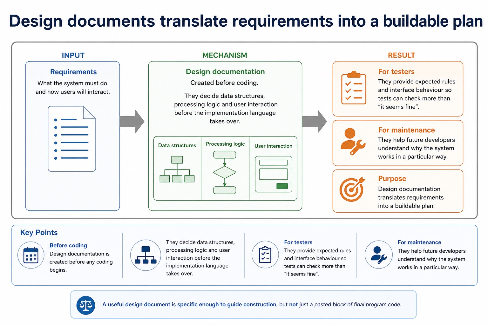
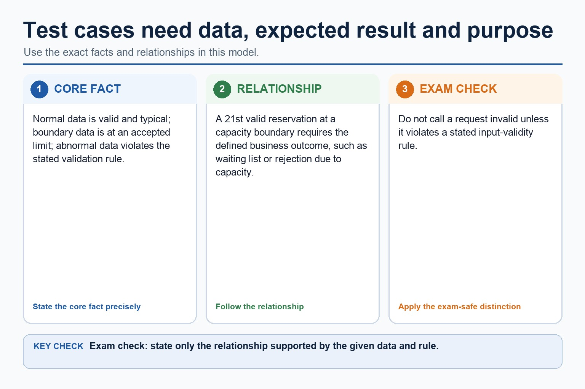
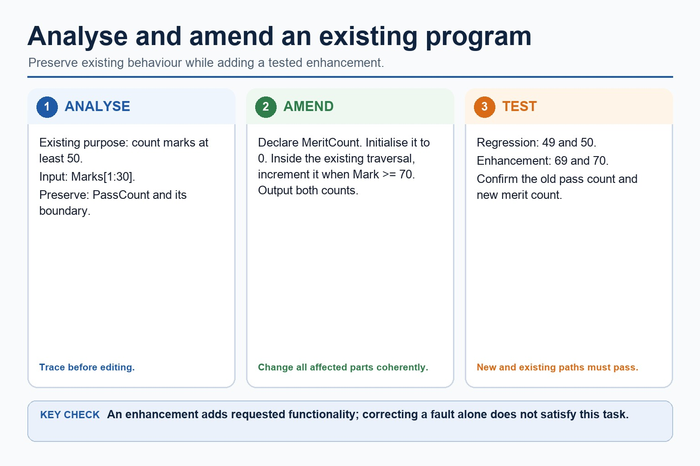
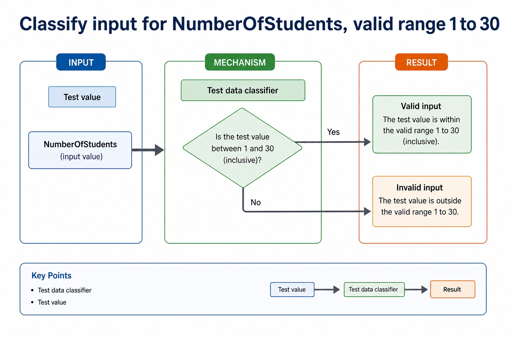
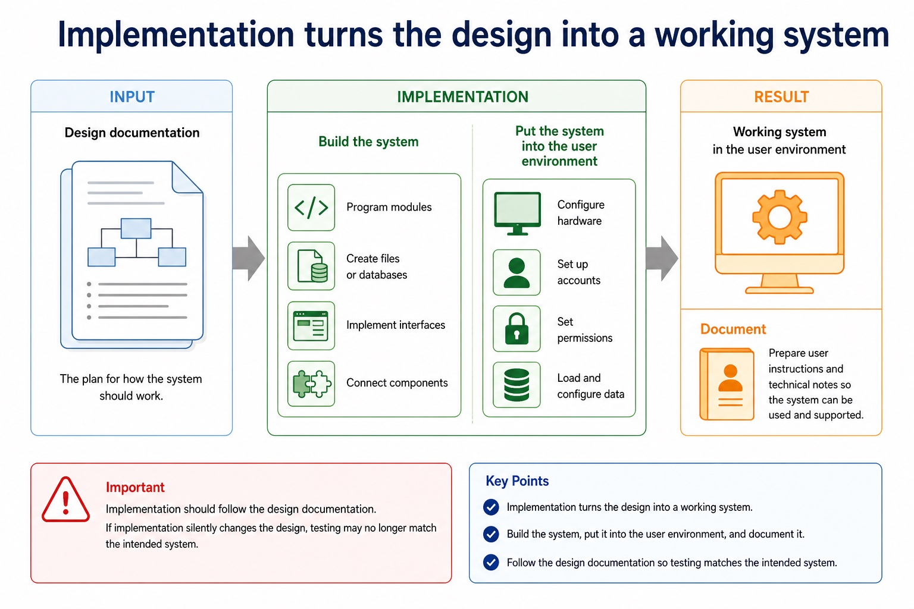

Cambridge AS9618 | Paper 2 | Section 12: Software development
Test strategies and test plans
Flexible-depth lesson
S12.06 | Learn from the diagrams, test the method, then choose the practice you need.
Choose a Quick, Full or Deep route
Quick route
Use the diagnostic, learning objectives, first worked example and foundation question. Stop once the learner can explain the central distinction accurately.
Full route
Use every knowledge-point material set, the worked method, the terminology check and all questions.
Deep route
Add the prerequisite refresher, ask learners to connect the concept checklist, discuss the labelled extension and complete a transfer question without a model answer.
Part 1 | optional depth
Prerequisite knowledge and quick diagnostic
Recall S12.05 before starting this lesson.
Give one accurate definition or method step before continuing. If it is missing, revisit only that prerequisite.
Open optional prerequisite refresher
Describe testing methods and select suitable test data: dry run, walkthrough, white-box, black-box, integration, alpha, beta and acceptance testing, and use of a stub.
Part 2 | knowledge-point material sets
Learn each point through visuals
Follow the map, the three-part explanation and the concrete cue. Open precise wording only after the idea is clear.
Open the concept checklist and choose what to teach
test
strategy
plan
01
S12.06 · concept
Test strategies and test plans
Concept map
teststrategyplan
See how it works
Meaningit does not require candidates to produce either document
MechanismThe Version 2 table requires understanding the need and likely contents
ConsequenceA strategy states levels/methods/responsibility, while a test plan records test ID, purpose, data, expected result, actual result and pass/fail
S12.06 diagrams
1 / 3
01
Process · 1 of 3
Test strategy and test plan are different documents
Open text transcript
A test strategy states the testing levels, methods, responsibilities, sequence and resources for the project.
A test plan records individual cases with a test ID, purpose, data, expected result, actual result and pass/fail outcome.
Normal, abnormal and extreme/boundary values are test-data categories; a list of values alone is neither a complete strategy nor a complete test plan.
02
Concrete example · 2 of 3
Design documents translate requirements into a buildable plan

Open text transcript
Design documentation purpose
Before coding
They decide data structures, processing logic and user interaction before the implementation language takes over.
For testers
They provide expected rules and interface behaviour so tests can check more than “it seems fine”.
For maintenance
They help future developers understand why the system works in a particular way.
A useful design document is specific enough to guide construction, but not just a pasted block of final program code.
03
Analogy / use · 3 of 3
Test cases need data, expected result and purpose

Open text transcript
Normal data is valid and typical; boundary data is at an accepted limit; abnormal data violates the stated validation rule.
A 21st valid reservation at a capacity boundary requires the defined business outcome, such as waiting list or rejection due to capacity.
Do not call a request invalid unless it violates a stated input-validity rule.
Open precise syllabus wording
Show understanding of the need for a test strategy and test plan and their likely contents.
The Version 2 table requires understanding the need and likely contents; it does not require candidates to produce either document.
Supporting diagram library
1 / 9
01
Diagram · 1 of 9
Extreme or boundary data uses valid values at accepted limits
Open text transcript
Extreme/boundary data uses valid values at the accepted lower or upper limit.
For an accepted mark range of 0 to 100 inclusive, 0 and 100 are valid extreme/boundary values.
Values just outside the limits, such as -1 and 101, are abnormal and should be rejected.
02
Diagram · 2 of 9
Analyse and amend an existing program

Open text transcript
Analyse the existing program's purpose, inputs, outputs, control flow and behaviour that must remain unchanged before editing it.
Amend declarations, initialisation, processing and output coherently to add the requested functionality rather than rewriting unrelated code.
Test the new path and rerun regression tests for the existing path; adding functionality is an enhancement, not merely correcting a fault.
03
Diagram · 3 of 9
Classify input for NumberOfStudents, valid range 1 to 30

Open text transcript
Test data classifier
Test value
04
Diagram · 4 of 9
Evaluation uses requirements and measurable success criteria
Open text transcript
A success criterion must state a measurable threshold before evidence can be judged against it.
If 8 of 10 users or 95 of 100 searches is sufficient, state that threshold explicitly.
Without a threshold, do not label partial evidence as an unqualified criterion met.
05
Diagram · 5 of 9
Implementation turns the design into a working system

Open text transcript
Implementation
Program modules, create files or databases, implement interfaces and connect components.
Put the system into the user environment, configure hardware, accounts, permissions and data.
Document
Prepare user instructions and technical notes so the system can be used and supported.
Implementation should follow the design documentation. If implementation silently changes the design, testing may no longer match the intended system.
06
Diagram · 6 of 9
Maintenance changes a system after it has been delivered
Open text transcript
Maintenance
Corrective
Fixing faults found after release, such as a booking clash that was not rejected.
Adaptive
Changing the system because the environment changes, such as a new timetable structure.
Perfective
Improving performance, usability or features, such as faster room search.
07
Diagram · 7 of 9
Which lifecycle stage is being described?
Open text transcript
Interactive stage chooser
Scenario
08
Diagram · 8 of 9
Good testing uses different categories of data
Open text transcript
Test data
Category
Room capacity example
Expected result
valid typical data
24 students for capacity 30
accepted
Boundary
09
Diagram · 9 of 9
Testing is planned evidence that the system behaves as expected
Open text transcript
Evidence
Unit testing
one module or subroutine
check clash detection function
actual output compared with expected output
Integration testing
modules working together
booking form sends data to save module
Apply the idea
Worked method
01Test login through review, construction, integration and release
02Test an inclusive mark range
03Three changes to one booking system
04Add a Merit count without breaking PassCount
05First dry-run the lockout counter and conduct a walkthrough in which peers inspect the algorithm.
06White-box tests cover true/false paths; black-box tests valid, invalid and boundary inputs from requirements.
Open precise terminology and exam facts
The Version 2 table requires understanding the need and likely contents; it does not require candidates to produce either document.
Alpha testing is performed internally before release; beta testing uses selected external users in realistic settings; acceptance testing checks the delivered system against agreed requirements. A strategy states levels/methods/responsibility, while a test plan records test ID, purpose, data, expected result, actual result and pass/fail.
Choose test data from the stated validation rule and give an expected result for each value. A label such as 'boundary' is insufficient unless the value really tests a stated limit.
Classify the reason for the change, not the code edited. The same module could receive a corrective change for a crash, an adaptive change for a new operating-system interface, or a perfective change for faster search and a clearer result display.
Every maintenance change requires impact analysis, controlled amendment, tests for the changed behaviour and regression tests for unaffected behaviour. Records should link the request, code change and test evidence.
Test the enhancement with data that exercises the new path and rerun regression tests for existing paths. Correcting a fault is corrective maintenance; adding or improving requested functionality is an enhancement and may be perfective maintenance.
Beyond syllabus / 延伸知识（不要求背诵）
modern teams often use continuous integration to repeat building and testing whenever a program changes.
Part 3 | select by learner need
Practice by question type
applyrecallfoundation2 marks
Question 1. What does a stub replace?
Show answer and marking guidance
Answer: A called module/component not yet available.
Marking guidance: Award one mark for each distinct, technically accurate point or method step.
Common error: For the command word apply, perform that exact action; do not replace it with an unrelated fact.
staterecallapplication2 marks
Question 2. State two precise facts about test strategies and test plans.
Show answer and marking guidance
Answer: The Version 2 table requires understanding the need and likely contents; it does not require candidates to produce either document. Alpha testing is performed internally before release; beta testing uses selected external users in realistic settings; acceptance testing checks the delivered system against agreed requirements. A strategy states levels/methods/responsibility, while a test plan records test ID, purpose, data, expected result, actual result and pass/fail.
Marking guidance: Award one mark for each distinct fact; do not credit a repeated point.
Common error: Do not repeat the same point in different words; each mark needs a separate idea or method step.
explainexplaintransfer3 marks
Question 3. Explain how test strategies and test plans would be applied in a suitable computing context.
Show answer and marking guidance
Answer: Alpha testing is performed internally before release; beta testing uses selected external users in realistic settings; acceptance testing checks the delivered system against agreed requirements. A strategy states levels/methods/responsibility, while a test plan records test ID, purpose, data, expected result, actual result and pass/fail. Choose test data from the stated validation rule and give an expected result for each value. A label such as 'boundary' is insufficient unless the value really tests a stated limit. Classify the reason for the change, not the code edited. The same module could receive a corrective change for a crash, an adaptive change for a new operating-system interface, or a perfective change for faster search and a clearer result display.
Marking guidance: Each mark needs a relevant point linked to the stated context.
Common error: Do not copy the worked example unchanged; transfer the method and check it against the new context.
Related past-paper indexes
Reference
Marks
Command word
Question type
9618/21/S/25 Q6(a)
4
complete
recall
9618/21/W/24 Q5(i)
4
complete
recall
Index only: Cambridge question and mark-scheme wording is not reproduced on this public course page.
Part 4 | close when ready
Summary and exam reminders
Summary
Define test strategies and test plans with the exact technical vocabulary expected by the syllabus.
Use the lesson method on a fresh context and show the intermediate decision, representation or calculation.
Match the shape of the answer to the command word and the available marks.
Check the final answer against the scenario instead of repeating a memorised sentence.
Common error to correct
Students often describe the lifecycle as a fixed checklist. Correction: development is iterative; findings can send a project back to earlier stages.
Exam technique
Follow the command word: state gives a fact; explain links a cause to a consequence; compare covers both sides.
Match the number of independent points or method steps to the available marks.
For test strategies and test plans, use the exact technical term before applying it to the scenario.